Photography
some of my favorite photos throughout the years, shot on my Canon AE-1 and Fujifilm X100VI
-
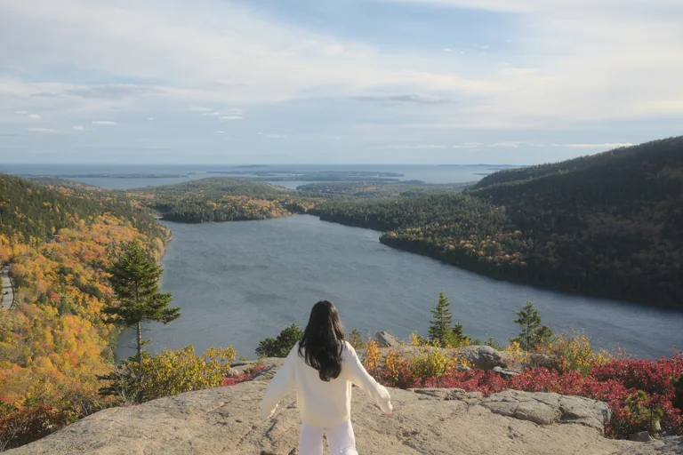
Acadia National Park 2026Fujifilm X100VI -
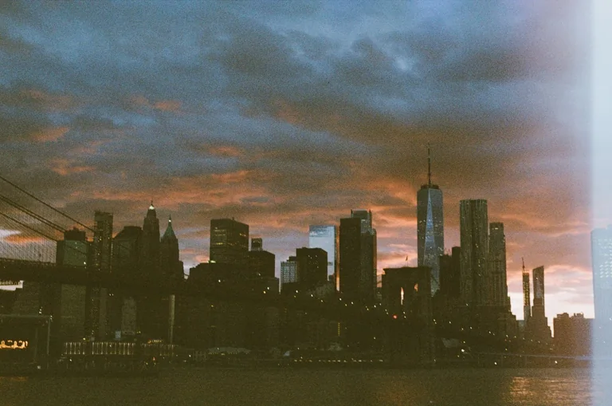
NYC 2025 - 2026Canon AE-1, Fujifilm 400 -
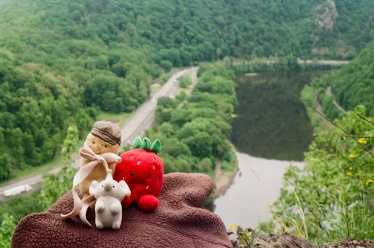
Del Water Gap 2026Canon AE-1, Fujifilm 200 -
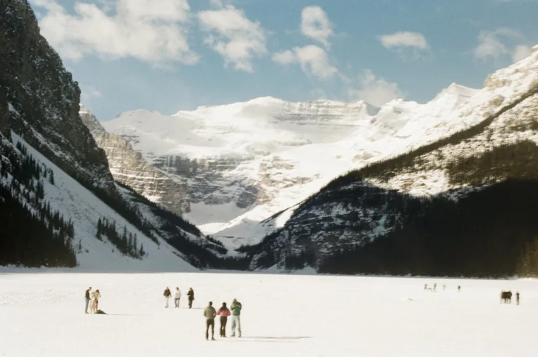
Banff, CA 2026Canon AE-1, Fujifilm 200 -
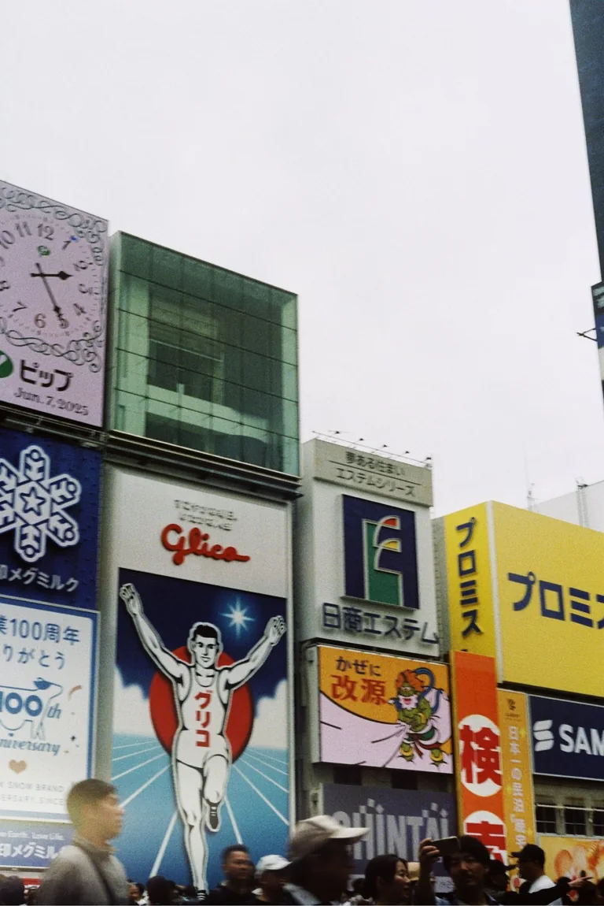
Japan/Korea 2025Canon AE-1, Fujifilm 200 -
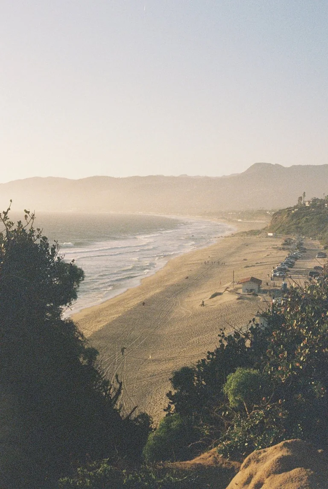
LA Spring 2025Canon AE-1, Fujifilm 200 -
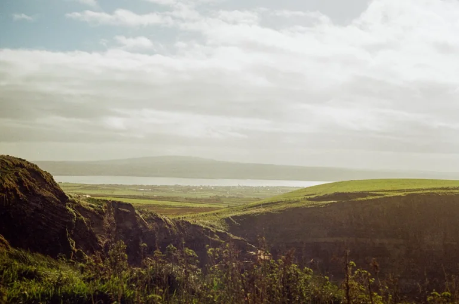
Ireland 2024Canon AE-1, Fujifilm 200 -
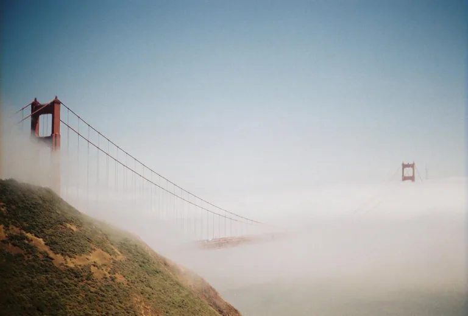
Bay Area/SF 2024Canon AE-1, Kodak Gold 400 -
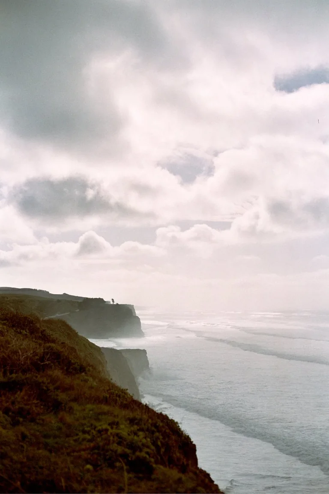
Bay Area/SF 2023Canon AE-1, Fujifilm 400 -
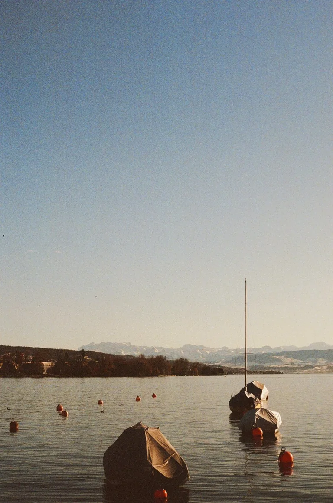
Switzerland 2024Canon AE-1, Fujifilm 200 -
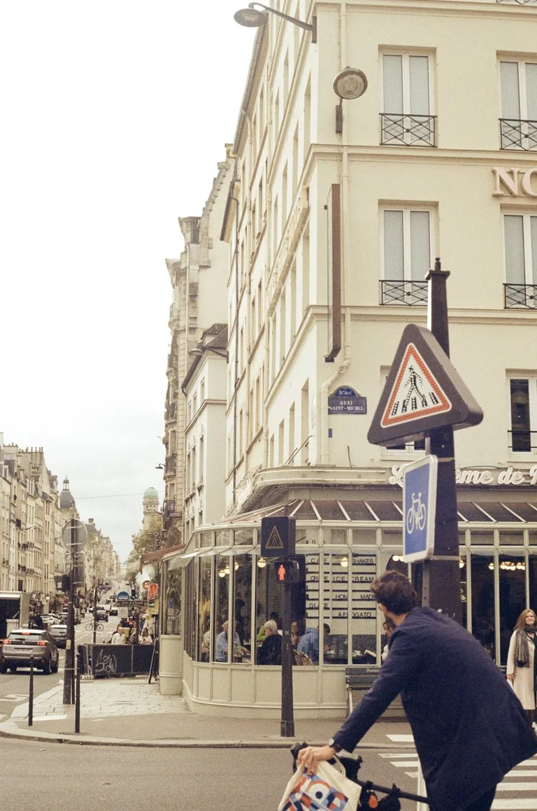
Paris 2024Canon AE-1, Fujifilm 200 -
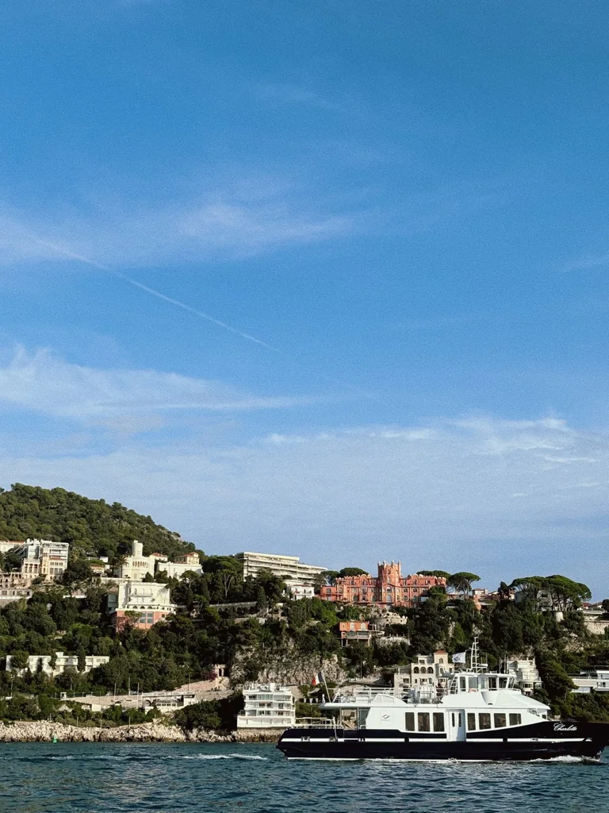
Nice 2024Canon AE-1, Fujifilm 200 -
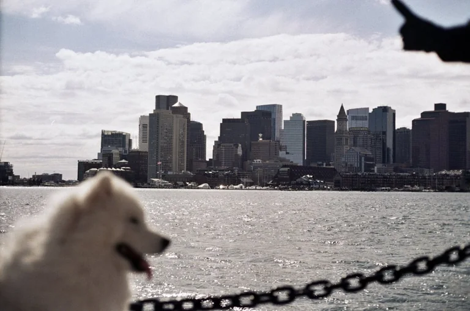
Boston 2023Canon AE-1, Kodak 200